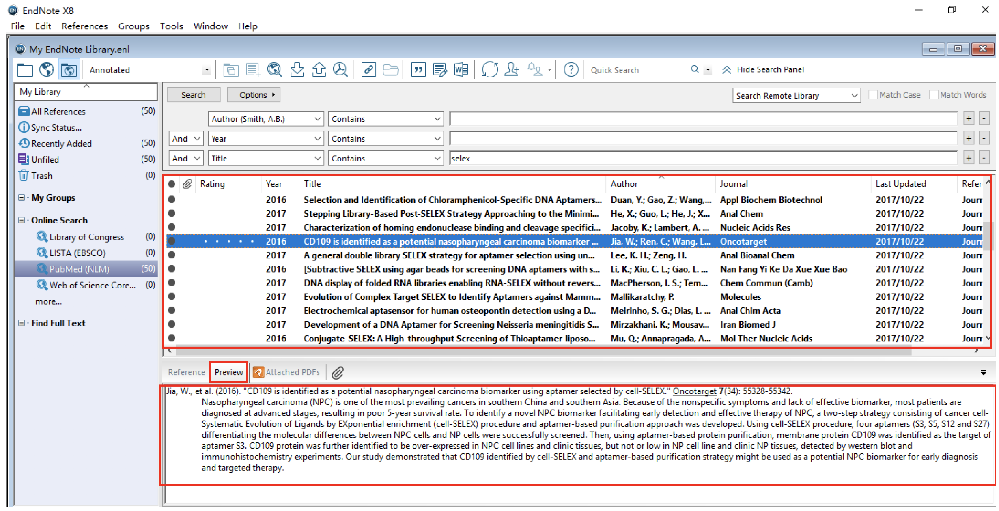
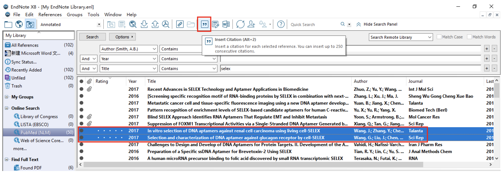

Endnote 功能演示 |
|
|
|
「检索和下载文献」首先打开EndNote X9，新建个人文献图书馆（*.enl）进入主界面，点击左上角图标①，进入文献图书馆和网络检索混合模式，如下图所示： 区域②为常见的几种数据库； 区域③为检索方式，包括作者、年份以及标题等检索方式； 区域④为检索结果显示区； 区域⑤为文献预览区域，包括文献信息、文献引文格式及摘要、文献pdf 附件。 「利用软件实现快速阅读」在区域④中用鼠标逐条点击文献记录，区域⑤便会显示该文献的引文格式及其文章摘要，如此便能进行高效文献阅读。  「利用星标来快速筛选文献、自动下载全文」阅读过程中，如需标记重要文献记录，可在区域④中第一列Rating中进行标星号操作，然后点击“Rating”即可按照文献标记的重要程度进行降序（或升序）排序。 如需下载全文，只需要选中要下载的文献条目，右键菜单选择“Find Full Text”即可，EndNote 便会自动检索下载选中的文献。下载的文献保存在“MyEndNote Library.enl”同根目录下“My EndNote Library.Data”文件夹下的PDF 文件夹中。 文献条目行前有“回形针“标识，表示已经下载了全文，如需查阅全文内容，只需选中该文献条目，在下图中点击”Attached PDFs“即可查看。 如需全屏阅读，点击上图中图标②即可进入全屏模式，在文献阅读过程中，利用工具栏，可以进行“高亮、下划线“等批注，点击保存即可保留注释。 如需在PDF 阅读器中打开进行阅读，可以在EndNote 主菜单栏下的工具栏上点击图标③。 「编辑参考文献格式」首先在Word 菜单栏的“EndNote”菜单下设置要插入的文献格式，并将光标定位在待插入文献所在位置，如下图所示 然后在EndNote 中将需要插入文档的参考文献选中，点击工具栏图标，如下图所示，即可将选中的文献条目按照已经设定的文献格式插入文档中。  结果如下图所示，EndNote 会自动更新文献引用标号，并将新插入的参考 文献显示在相应位置；如需删除已插入的参考文献，只需要删除对应的文献引用 标号，其对应的文献引用则会同步删除，无需手动删除。 EndNote 还可以插入图表，首先将待插入的图表以附件的形式附在参考文 献中（为便于插图管理，可以新建图片组），如下图，并在Caption 一栏输入图 片标题。 然后在Word 中将光标定位在待插入图片所在位置，在“EndNote”菜单 下点击最左侧按钮“Insert Citation”旁的下拉三角形，选择“Insert Figure”， 在弹出的界面中搜索图片标题，选中要插入条目，点击insert，即完成插图，如 下图所示。 |
| BFSU_Linlan Li | |